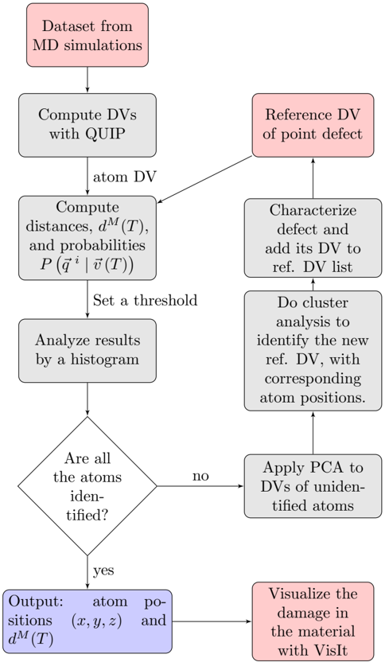
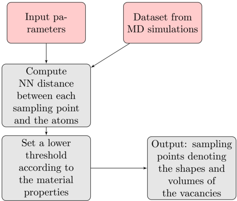
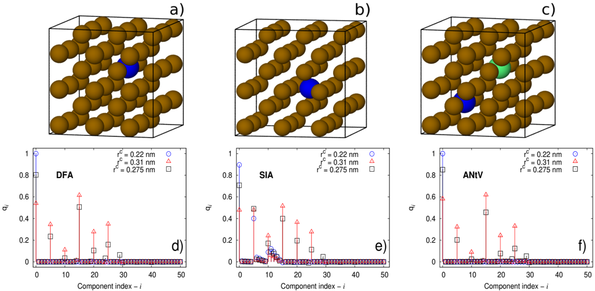
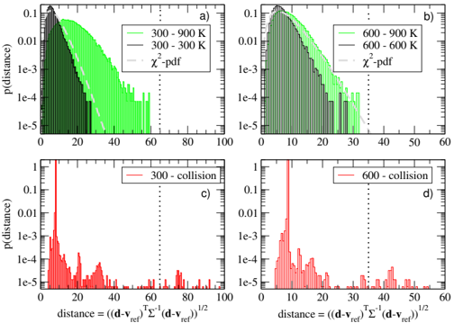
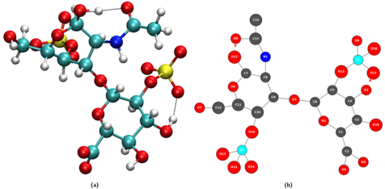
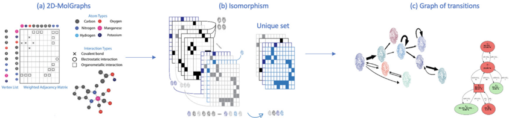

Todos los resúmenes agrupados por áreas relacionadas y por líneas de
citación. Cada tópico abre con una síntesis general y reúne las figuras estrella de cada
paper con su caption. Las flechas entre temas indican qué cluster alimenta a cuál.
01
Daño por radiación y evolución de defectos
7 papers
Núcleo de materiales nucleares y de fusión. El trabajo de
Nordlund et al. (2018) sobre el daño primario funciona como base conceptual
—la cascada de colisión, la función de daño y la zona de alta entropía— y es la
referencia que articula al resto: la irradiación de la HEA FeCoNiCrCu (Zhanguang),
las cascadas en CuNi (Wei 2025), el acople MD+kMC dependiente de la tasa de dosis
en tungsteno (Boleininger 2025) y la teoría de materiales de fusión (Reali 2026).
La nucleación de voids (Hemani 2014) y la difusión de vacancias en HEAs
(Reimer 2025) cierran el ciclo defecto→migración→propiedad. Estos papers comparten
el método de dinámica molecular de cascadas y alimentan directamente al Tema 02,
donde el ML aprende a detectar los defectos que aquí se generan.
Aquí el aprendizaje automático se aplica sobre las estructuras dañadas del
Tema 01 para encontrar, clasificar y cuantificar defectos.
Pipelines no supervisados con autoencoders sobre descriptores SOAP
(Del Fré 2025) y fingerprints de defectos (FaVAD, von Toussaint),
un CVAE sobre imágenes STEM (Ayyubi 2026), U-Net para nuclear
voids en tantalio (Anantharanga 2025) y TGS in situ (Botica MIT 2026). El
3D-CNN de Peivaste (2023) predice propiedades de material perfecto y defectuoso.
Toman descriptores estructurales del Tema 05 (SOAP, parámetros de orden) y
arquitecturas convolucionales/voxel del Tema 04.
2004
FaVAD: Software workflow for characterisation and visualizing of defects in crystalline structures
** U. von Toussaint et al.
RadiaciónIASoftware

Figure 1: Workflow for analyzing the damaged material sample by calculating the

Figure 2: Workflow for calculating vacancy spatial volume by computing nearest n

Figure 3: Fe geometries used to compute the reference DVs: A Fe atom depicted as

Figure 4: (Color on-line) Normalized distance distributions of the atom DVs with
Figure 1: A reversed erosion algorithm, together with EBSD and grain boundary inFigure 2: A visual compilation of three image sets: grain boundary energy (top rFigure 3: A visual compilation of three image sets: micrograph (top row), grainFigure 4: The full U-Net architecture, comprised of an encoder-decoder structure
La familia de GNN para materiales nace con
CGCNN (Xie & Grossman 2018), que representa el cristal como grafo y
se cita en casi todo lo posterior: el framework de Linton (2026) que combina
CHGNet + CGCNN para evitar la DFT en vacancias de HEAs, CarNet para tensores
cartesianos (Chen 2025), los procesos gaussianos profundos multitarea (Alvi 2025),
los 3D-CNN para constantes elásticas (Zorkaltsev 2025) y la teoría de grafos en MD
de sílice (Bougueroua/Gaigeot 2025). OE-BERT extiende el paradigma a transformers
en optoelectrónica, y el review de Choudhary (2022) mapea todo el campo. Apoya
directamente al Tema 01 (predice Evf y difusión) sustituyendo cálculos DFT.
FIG. 1. Illustration of the crystal graph convolutional neural network (CGCNN).FIG. 2. The performance of CGCNN on the Materials Project database[11]. (a) HistFIG. 3. Extraction of site energy of perovskites from total energy above hull. (FIG. S1. The crystal structures and crystal graphs of NaCl (a) and KCl (b).
Exploiting graph theory in MD simulations for extracting chemical and physical properties of materials
** S. Bougueroua et al.
MDIAMateriales

Fig. 1 Illustration of the passage from a 3D conformation (a) to a 2DMolGraph (b

Fig. 2 Identification of conformations over a given MD trajectory, following theFig. 3 The generalized workflow for the autonomous exploration of the organometaFig. 4 The network of states of the silica-supported zirconocene hydride catalys
OE-BERT: pre-entrenamiento de dominio (DAPT) para optoelectrónica
—
IA
Figure 1. Applications of BERT-like models in academic research. Left. BERT-likeFigure 2. Training pipeline for the optoelectronics-adapted language models deveFigure 3. Keyword frequency bar chart for normalized keywords found in 20k ScienFigure 4. Pretraining loss and token prediction accuracy progress of BERT, ALBER
Framework para evitar la DFT mediante GNN: energías de formación de vacancias en HEAs FCC
Nathan Linton, Parampreet Singh & Dilpuneet S. Aidhy — npj Comput. Mater.
IAMaterialesHEAVacancias
Fig. 2 — Marco del modelo: CHGNet ajustado + CGCNN reemplazan a la DFTFig. 1 — Volumen atómico y carga de Bader vs. energía de formación de vacanciasFig. 3 — Distorsión de red: CHGNet ajustado vs. DFT (MAD)Fig. 4 — Predicciones de carga de Bader (DFT vs. CGCNN)
CarNet: redes neuronales para tensores cartesianos
—
IA
FIG. 1. Schematic illustration of Cartesian natural tensor operations. a . ConstFIG. 2. Overview of the CarNet model architecture. The relative distance vectorFIG. 3. MD simulation results of bulk LiPS and water systems. a -c : Crystal strFIG. 4. Performance of CarNet in predicting elastic properties . a . Predicted b
Predicción multitarea de HEAs con incertidumbre (Deep Gaussian Processes)
—
IAMateriales
Fig. 1 | Schematic overview of the BIRDSHOT data acquisition work fl ow. The datFig. 2 | Pairwise plot illustrating correlations between different experimentalFig. 3 | Schematic representation of the two-layered variational deep Gaussian pFig. 4 | The fi gure illustrates difference in fi tting performance for hardness
Review: Deep Learning para la ciencia de materiales
—
IAMateriales
Fig. 1 Schematic showing an overview of arti fi cial intelligence (AI), machineFig. 2 Schematic representations of an atomic structure as a graph. a CGCNN modeFig. 3 Example applications of deep learning for spectral data. a Predicting strFig. 4 Deep-learning-based algorithm for atomic site classi fi cation. a Deep ne
Linaje canónico de la visión geométrica 3D, con una cadena de
citación nítida: PointNet (Qi 2017) → PointNet++ (Qi 2017) →
DGCNN/EdgeConv (Wang 2020), junto a la vía basada en vóxeles de
VoxelNet (Zhou 2017), el dataset de anotación de regiones de Yi (PartNet)
y el framework reproducible Torch-Points3D (Chaton 2020) que los integra.
Son las arquitecturas fundacionales que el Tema 02 reutiliza para procesar
estructuras atómicas como nubes de puntos o rejillas de vóxeles.
2016
A Scalable Active Framework for Region Annotation in 3D Shape Collections
** Li Yi et al.
IA
Figure 1: We use our method to create detailed per-point labeling of 31963 modelFigure 2: This figure illustrates the number of correctly-labeled models (y-axisFigure 3: This figure summarizes our pipeline. Given the input dataset we selectFigure 4: At each iteration our method selects an annotation set (in orange) and
PointNet: Deep Learning on Point Sets for 3D Classification and Segmentation
** Charles R. Qi et al.
IA
Figure 1. Applications of PointNet. We propose a novel deep net architecture thaFigure 3. Qualitative results for part segmentation. We visualize the CAD part sFigure 4. Qualitative results for semantic segmentation. Top row is input pointFigure 5. Three approaches to achieve order invariance. Multilayer perceptron (M
PointNet++: Deep Hierarchical Feature Learning on Point Sets in a Metric Space
** Charles R. Qi et al.
IA
Figure 1: Visualization of a scan captured from a Structure Sensor (left: RGB; rFigure 2: Illustration of our hierarchical feature learning architecture and itsFigure 4: Left: Point cloud with random point dropout. Right: Curve showing advaWall Floor Chair Desk Bed Door Table Figure 6: Scannet labeling results. [20] ca
VoxelNet: End-to-End Learning for Point Cloud Based 3D Object Detection
** Yin Zhou, Oncel Tuzel
IA
Figure 1. VoxelNet directly operates on the raw point cloud (no need for featureFigure 2. VoxelNet architecture. The feature learning network takes a raw pointFigure 4. Region proposal network architecture.Figure 5. Illustration of efficient implementation.
Torch-Points3D: A Modular Multi-Task Framework for Reproducible Deep Learning on 3D Point Clouds
** Nicolas Chaulet et al.
IASoftware
Figure 1: Torch-Points3D supports multiple tasks such as classification, segmentFigure 2: Overall architecture of the framework, with data flow highlighted in rTable 3: Improvement in terms of mIoU provided by inference-time voting schemesListing 4: Optimizer hyper-parameters used for training all models on S3DIS.
Donde se construyen y explotan los potenciales interatómicos
aprendidos (MLIP) y los descriptores estructurales que alimentan al resto.
Desarrollo de MLIP para HfO₂ ferroeléctrico (Kankanamalage 2026), el potencial
de neuroevolución (NEP) para conductividad térmica de 16 metales (Cao), el puente
atomístico↔continuo del transporte térmico (Ugwumadu 2026, ligado a sptc-ai),
el dataset OMC25 de cristales moleculares (Meta 2025) y la descomposición de fase
por ablación láser (Sun 2025). El clásico de Steinhardt (1983) aporta los
parámetros de orden orientacional que el Tema 02 usa como descriptores de defectos.
1983
Bond-orientational order in liquids and glasses
** Paul J. Steinhardt, David R. Nelson, Marco Ronchetti
MDMateriales
FlG. 1. Different 13-atom particle clusters occurring in liquids near the meltinFIG. 2. Histograms of quadratic and third-order invariants for 13-atom icosahedrFIG. 3. Symmetry parameter 8'6 for a 13-atom hcp cluster as a function of aspectFIG. 4. (a) Quadratic invariants QI for a hightemperature LennardJones liquid (s
Lattice thermal conductivity of 16 elemental metals from molecular dynamics simulations with a unified neuroevolution potential
** Shuo Cao et al.
MDIAMateriales
FIG. 1. Simulation models in this work. Unit cells and supercells for metals witFIG. 2. Time convergence of the phonon thermal conductivity. Cumulative averagesFIG. 3. Comparison of phonon thermal conductivities with and without isotope scaFIG. 5. Phonon thermal conductivity comparison between MD simulations with UNEP-
sptc-ai: Conductividad Térmica en Si con ML y Elementos Finitos
et al.
MaterialesIAMDSiliconFEM
FIG. 1 — Arquitectura y entrenamiento de sptc-aiFIG. 2 — Rendimiento de sptc-ai en distintas morfologias de SiFIG. 3 — sptc2fem: conductividad y malla adaptativaFIG. 5 — Validacion experimental en nanohilos 3C/2H de Si
OMC25: dataset de cristales moleculares orgánicos (Meta)
—
MDIAMateriales
Figure 1 Overview of the OMC25 dataset: generation method, structure relaxationsFigure 3 Comparison of properties from the first and last frames of relaxation tTable 3 MLIP evaluations: validation and test metrics, as well as X23b and SchröListing S2 Example INCAR settings for the DFT relaxations with VASP.
Dynamics of nanoscale phase decomposition in laser ablation
** Y. Sun et al.
MD
Fig. 1 | Experimental setup with simultaneous small- and wide-angle scattering mthe WAXS from the sample. At negative delays ( δ t < 0 ps), it captures Au (111)Fig. 2 | Temporal evolution of the WAXS and SAXS patterns measured for a 100 nmused as the reference in the evaluation of the difference patterns Δ S ( Q , δ t
MLIP development and phase transition analysis of ferroelectric HfO₂
** Y. H. Kankanamalage et al.
IAMateriales
FIG. 1. Crystal structures of different phases of HfO2: (a) Ferroelectric OrthorFIG. 3. Predicted bulk modulus (B) and shear modulus (G) from the MLIP model comFIG. 2. Equations of state (energy vs volume) for HfO2 polymorphs: Pbca , Pca 21FIG. 4. Pressure dependence of the nine independent elastic constants Cij of the
Seamlessly joining length scales: From atomistic thermal graphs to anisotropic continuum conductivity
** C. Ugwumadu , D. A. Drabold , R. M. Tutchton
MDIAMateriales
FIG. 1. Architecture and Training of sptc-ai . Empirical probability of high-SPTFIG. 2. Performance of sptc-ai . The 'NSPTC' colorbar indicates the normalized SFIG. 3. Analysis of sptc2fem results for the amorphous-crystalline Si structure.FIG. 4. Analysis of the sptc2fem results for the other structures. (a) Twin grai
Las piezas fundacionales y transversales de IA: el artículo
seminal de retropropagación (Rumelhart, Hinton & Williams 1986) que
habilita todo lo demás, DJINN (Humbird 2018) que inicializa redes a partir de
árboles de decisión, y un survey actual sobre LLMs para generación de código
(Jiang 2026). Es la base metodológica que sostiene los Temas 02, 03 y 04.
1986
Learning representations by back-propagating errors
** David E. Rumelhart, Geoffrey E. Hinton, Ronald J. William
Fig. 1 — Cronología de LLMs para generación de códigoFig. 2 — Arquitecturas encoder-decoder y decoder-onlyFig. 3 — Proceso de búsqueda y selección de papers del surveyFig. 6 — Taxonomía completa de LLMs para código
DJINN: inicialización de redes neuronales con árboles de decisión
—
IA
Fig. 1. Illustration of the DJINN mapping for a simple decision tree. Gray neuroFig. 2. Truth tables, decision trees, and DJINN-initialized neural networks forFig. 3. MSE (normalized to the MSE of one tree) as a function of the number of tFig. 4. Cost (MSE for data scaled to (0,1)) as a function of training epoch for
Herramientas para explorar y diseminar datos atomísticos.
Dos artículos sobre Chemiscope (el de JOSS y el de Ceriotti/Chorna 2026)
cubren la visualización interactiva de estructuras y descriptores. Se conectan con
Torch-Points3D (Tema 04) y FaVAD (Tema 02) como capa de infraestructura/visualización
común a todo el ecosistema.
2025
Chemiscope 1.0: Visualización Interactiva de Estructuras Atómicas
Guillaume Fraux et al. — JOSS
SoftwareMaterialesIAVisualizacion
Fig. 1 — Arquitectura y backends de Chemiscope 1.0Fig. 2 — 50 000 estructuras MD22 visualizadas en espacio latente PET-MAD
Chemiscope 1.0: interactive exploration of atomistic data from analysis to dissemination
** Sofiia Chorna et al.
Software
Figure 1: Overview of Chemiscope 1.0 multi-environment support. The Python API aFigure 2: 50k random structures from the MD22 dataset (Chmiela et al., 2022) visFigura fig_001Figura fig_002
Material de contexto y casos interdisciplinarios: el texto de divulgación
«Átomos en movimiento» (introducción a la ciencia de materiales), el estudio
de fotocatalizadores alternativos al TiO₂ (Hernández 2009) y un trabajo de
entomología sobre bioinsecticidas en colza (Tonks 2026). No comparten método con
los clusters anteriores pero completan la biblioteca.
2009
Development of alternative photocatalysts to TiO₂: Challenges and opportunities
** M. D. Hernández-Alonso et al.
Materiales
Silvia SurezMara D : Hernndez -AlonsoJuan M : CoronadoFernando Fresno
Bioinsecticidas en Colza: Efectos en Pulgones y Parasitoides
Tonks et al.
BiologíaEntomologíaPlaguicidas
Figure 1 — Contención de Diaeretiella rapae para experimentoFigure 2 — Supervivencia de Myzus persicae y BrevicoryneFigure 4 — Probabilidad de emergencia de parasitoidesFigure 5 — Supervivencia adicional con distintos tratamientos
Átomos en Movimiento — Introducción a la Ciencia de Materiales
Texto de referencia
MaterialesTexto
Agua ampliada mil millones de veces — estructura atómicaFigura 1.2 — Estructura de materialesFigura 1.3 — Representación atómicaFig. 1.10 — La sustancia representada es α-irona